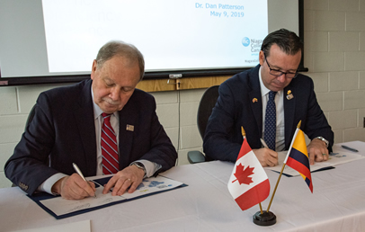
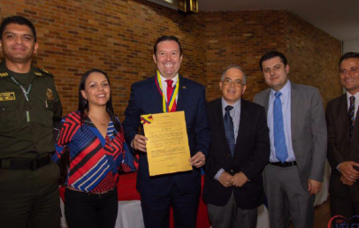
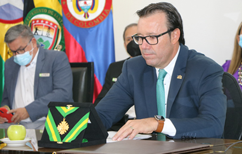

← Volver al inicio
Reconocimientos
Santander también lo ha reconocido.
Doce distinciones de concejos, asambleas, gremios y medios, por su trayectoria y su impacto educativo.
- Personaje 2024 · Vanguardia LiberalCategoría de instituciones públicas que hacen crecer a Santander.
- Orquídea de Oro · CORPOBOGOTÁPor su labor en Derecho Humanitario y paz.
- Orden «Carlos Gutiérrez» · FloridablancaLa máxima distinción del Concejo Municipal.
- Colegio Nacional de PeriodistasPor su servicio a la sociedad y su trato con la prensa.
- Orden «Victoriano de Diego y Paredes» · PiedecuestaEn grado Gran Cruz.
- Orden «Francisco Mantilla de los Ríos» · GirónEn grado Gran Comendador, del Concejo de Girón.
- Orden «Ciudad de Bucaramanga»Al Mérito Educativo y Cultural, del Concejo de Bucaramanga.
- Medalla al Mérito Cívico · VélezDel Concejo Municipal de Vélez.
- Condecoración «General José María Mantilla» · PiedecuestaEn la categoría «Ciudadano Excelencia».
- Orden «Ciudadanía de Vélez»Del municipio de Vélez.
- Orden «Juan Manuel Ortiz» · El SocorroReconocido como hijo ilustre de su municipio natal.
- Condecoración «Luis Carlos Galán Sarmiento»La máxima condecoración de la Asamblea de Santander.
Fuente: Perfil oficial del rector en el sitio de las UTS.
Galería

Firmando convenios con Canadá 
Gestionando recursos para la REDTTU 
Ceremonia de grados en la UTS Panelista en Ruta Regiones 
Posesión ante el Consejo Nacional de Educación Superior 
Reconocimiento en el municipio de Vélez (Santander) 
Condecoración por parte del Concejo de Bucaramanga 
Recorrido por la obra del campus Barrancabermeja
Fotos: Galería oficial del rector en el sitio de las UTS.